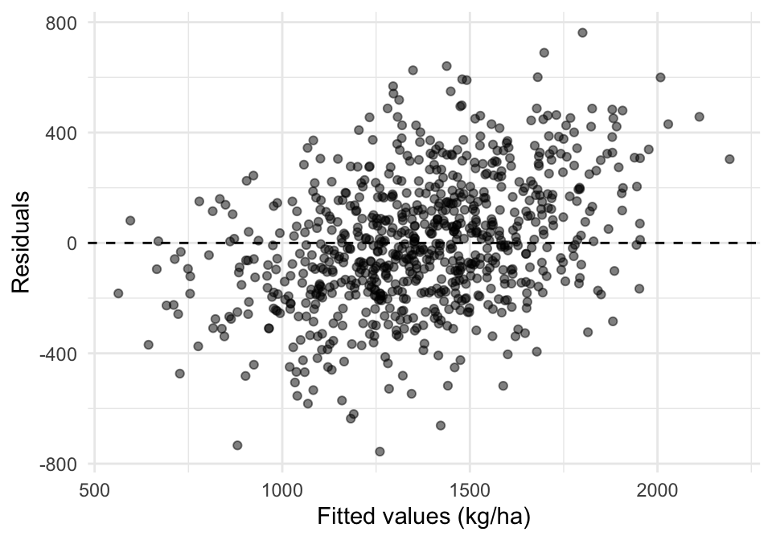
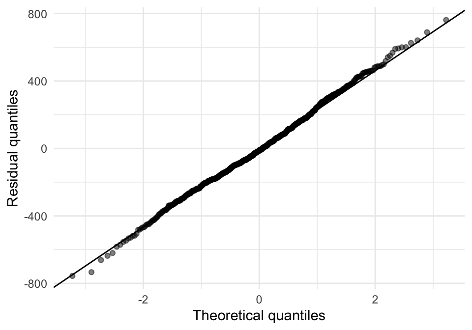
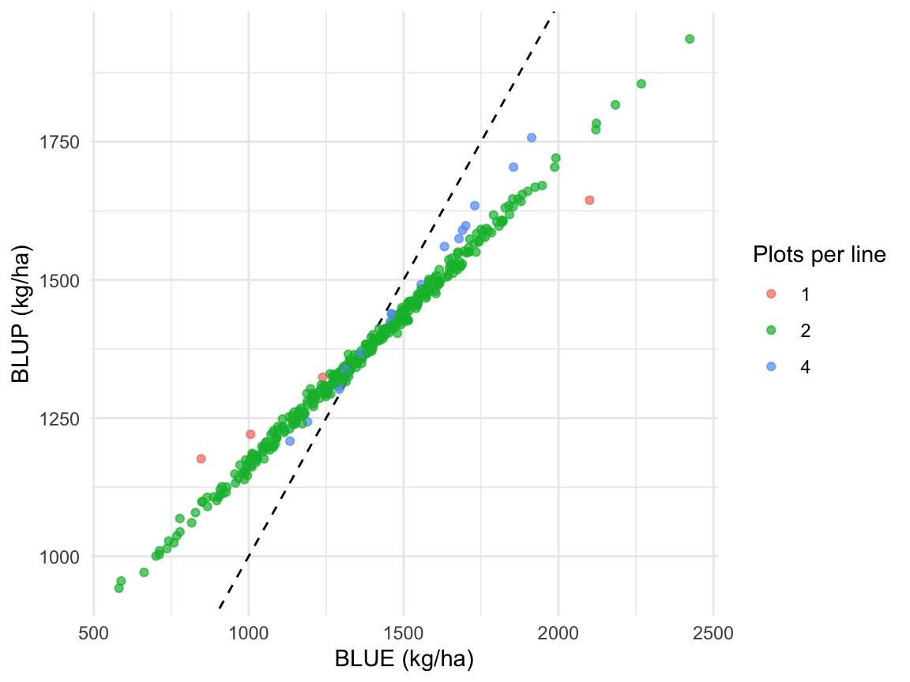
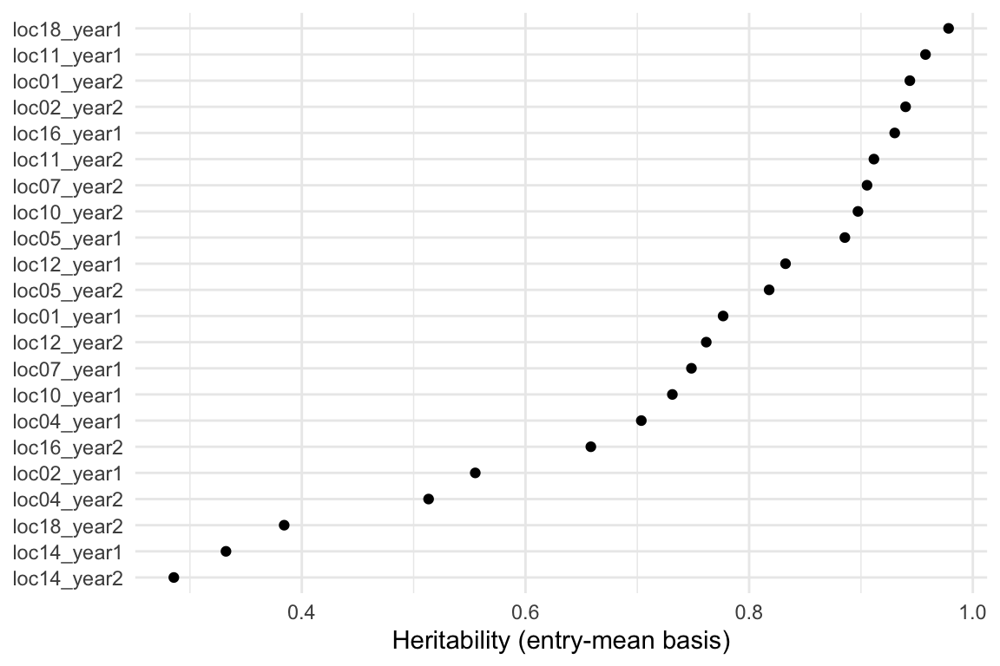

library(dplyr)
library(tidyr)
library(readr)
library(ggplot2)
library(lme4)
library(emmeans)7 Mixed Models, BLUEs, BLUPs and Heritability
Author: Luis Fernando Delgado Muñoz
Session: Day 3, Wednesday 11 November
7.1 Learning objectives
- Explain why the ANOVA of Chapter 6 is not enough for incomplete block designs and for unbalanced data
- Distinguish fixed and random effects, and choose them for a breeding trial
- Fit a mixed model with
lme4, extract the variance components and test them - Extract and compare BLUEs and BLUPs, and know which one to use
- Estimate the heritability of a trial (classical and generalized) and understand what it depends on
In Chapter 5 we wrote the model that follows from the layout, and in Chapter 6 we fitted it as a fixed ANOVA. That works well in a complete block design. This chapter explains what changes when the design has incomplete blocks, when some plots are lost, or when we want to predict the performance of lines and measure how much of the variation is genetic.
7.2 The bean trial
We use the alpha-lattice bean trial of Chapter 5 and Chapter 4: 380 lines in 2 replicates, each replicate divided into 18 incomplete blocks of 22 plots. Sixteen lines are repeated twice in each replicate (checks), the other 364 lines appear once per replicate. The yield is YdHa_clean, the cleaned and recalculated yield of Chapter 4.
beans <- read_csv("data/Example_Beans.csv", show_col_types = FALSE) |>
mutate(rep = factor(rep),
line = factor(line),
# the labels B1 to B18 are used again in each replicate: the block is "rep:block"
rb = factor(paste(rep, block, sep = ":")))
n_plots <- beans |> filter(!is.na(YdHa_clean)) |> count(line, name = "n")
checks <- n_plots |> filter(n > 2) |> pull(line)
yield <- beans |> filter(!is.na(YdHa_clean)) # 788 plots (4 plots have no yield)
c(plots = nrow(yield), lines = nlevels(droplevels(yield$line)), blocks = nlevels(yield$rb)) plots lines blocks
788 380 36
WarningBlocks must be nested in the replicate
The block labels B1 to B18 are repeated in the two replicates. If we write (1 | block), the model treats B1 of replicate 1 and B1 of replicate 2 as the same block, which is wrong. We create rb, the block inside its replicate, and use it. This is a very common mistake in resolvable designs.
7.3 Why the ANOVA is not enough
The ANOVA of Chapter 6 can be fitted to this trial:
fit_lm <- lm(YdHa_clean ~ rep + rb + line, data = yield)
anova(fit_lm)Analysis of Variance Table
Response: YdHa_clean
Df Sum Sq Mean Sq F value Pr(>F)
rep 1 1774601 1774601 22.0750 3.693e-06 ***
rb 34 37594755 1105728 13.7546 < 2.2e-16 ***
line 379 66960815 176678 2.1978 2.613e-14 ***
Residuals 373 29985316 80390
---
Signif. codes: 0 '***' 0.001 '**' 0.01 '*' 0.05 '.' 0.1 ' ' 1It runs, and the genotype line is significant. But it has four limitations that matter in breeding:
- Blocks are as important as genotypes. In a moment we will see that the variance among incomplete blocks is as large as the genetic variance. A line that happened to be sown in a good block looks better than it is.
- Fixed blocks use only part of the information. With blocks as fixed effects each line is compared only within the blocks where it appears. A mixed model also uses the differences between blocks (recovery of inter-block information).
- The ANOVA gives no genetic parameters. For heritability we need the variance of the genotypes, not the test of their differences.
- Lines with different replication are treated alike. In this trial 16 lines have 4 plots and 364 have 2 (and 4 lines have a single plot because of lost yields). The precision of their means is different, and the ranking should take it into account.
The raw means show the problem. Compare the 20% best lines by raw mean with the 20% best lines after adjusting for the blocks:
fit_fix <- lmer(YdHa_clean ~ rep + line + (1 | rb), data = yield)
blue <- emmeans(fit_fix, ~ line, lmer.df = "asymptotic") |>
as.data.frame() |>
select(line, BLUE = emmean, SE_BLUE = SE)
raw <- yield |> group_by(line) |> summarise(raw_mean = mean(YdHa_clean), .groups = "drop")
cmp <- left_join(raw, blue, by = "line")
top20 <- function(x) x >= quantile(x, 0.80)
c(correlation = cor(cmp$raw_mean, cmp$BLUE),
best_20pct_by_raw = sum(top20(cmp$raw_mean)),
also_best_by_BLUE = sum(top20(cmp$raw_mean) & top20(cmp$BLUE))) correlation best_20pct_by_raw also_best_by_BLUE
0.9019176 76.0000000 61.0000000 The correlation between the two is 0.90, but 15 of the 76 lines chosen by raw mean (one in five) would not be chosen after adjusting for the incomplete blocks. In the next section we build the model that does the adjustment.
7.4 Fixed and random effects
A factor is fixed when its levels are the ones we are interested in and we want an estimate for each of them. It is random when its levels are a sample from a larger population and we want to know how much they vary.
| Factor | In the bean trial | Usual choice | Why |
|---|---|---|---|
| Replicate | 2 replicates | Fixed | Only two levels; a variance would be badly estimated |
| Incomplete block | 36 blocks | Random | Many blocks, sample of the field; we want to recover inter-block information |
| Genotype (compare lines) | 380 lines | Fixed | We want an adjusted mean for every line: BLUE |
| Genotype (predict, heritability) | 380 lines | Random | Lines are a sample of a breeding population; we want their variance and a prediction for each: BLUP |
The same factor, the genotype, is fixed or random depending on the question. The rest of the chapter uses both.
7.5 The model
For the alpha-lattice, the yield of line \(i\) in block \(k\) of replicate \(j\) is:
yield = overall mean + replicate effect + block effect (random)
+ genotype effect + error (random)The random effects have a variance each: \(\sigma^2_b\) for the blocks, \(\sigma^2_g\) for the genotypes (when it is random) and \(\sigma^2_e\) for the plot error. In lme4 the random terms go in parentheses:
fit_rand <- lmer(YdHa_clean ~ rep + (1 | rb) + (1 | line), data = yield)
vc <- as.data.frame(VarCorr(fit_rand))
vc <- data.frame(component = c("Genotype", "Incomplete block", "Residual (plot error)"),
variance = round(vc$vcov),
percent = round(100 * vc$vcov / sum(vc$vcov), 1))
vc component variance percent
1 Genotype 48762 27.8
2 Incomplete block 46942 26.8
3 Residual (plot error) 79473 45.4The incomplete blocks carry as much variance as the genotypes (28% and 27% of the total, with 45% for the plot error). This is the reason for the large difference between raw means and adjusted means.
NoteLink with the ANOVA
In a balanced design the variance components can be obtained from the mean squares of the ANOVA (expected mean squares, as we did for the durum wheat in Chapter 6). With incomplete blocks, unbalanced data or several random terms, the mean squares do not give the components directly, and the mixed model, fitted by REML (restricted maximum likelihood), is the tool.
7.5.1 Do the variance components differ from zero?
The likelihood ratio test compares the model with and without the term. The models are fitted by maximum likelihood (REML = FALSE) for the comparison. Because a variance cannot be negative, the null hypothesis is on the boundary and the p-value of the usual chi-square is conservative: divide it by two.
m_full <- update(fit_rand, REML = FALSE)
m_nog <- update(m_full, . ~ . - (1 | line)) # without genotype variance
m_nob <- update(m_full, . ~ . - (1 | rb)) # without block variance
chisq <- c(anova(m_nog, m_full)$Chisq[2], anova(m_nob, m_full)$Chisq[2])
data.frame(term = c("Genotype", "Incomplete block"),
chisq = round(chisq, 1),
p_value_halved = format.pval(pchisq(chisq, 1, lower.tail = FALSE) / 2, eps = 1e-16)) term chisq p_value_halved
1 Genotype 64.3 5.4318e-16
2 Incomplete block 177.8 < 1e-16Both variances are clearly different from zero. As a check of the residuals we use the plot of the model, as in Chapter 6:
res <- data.frame(fitted = fitted(fit_rand), resid = resid(fit_rand))
ggplot(res, aes(fitted, resid)) +
geom_hline(yintercept = 0, linetype = 2) + geom_point(alpha = 0.5) +
labs(x = "Fitted values (kg/ha)", y = "Residuals") + theme_minimal()
ggplot(res, aes(sample = resid)) + stat_qq(alpha = 0.5) + stat_qq_line() +
labs(x = "Theoretical quantiles", y = "Residual quantiles") + theme_minimal()

7.6 BLUEs and BLUPs
The two acronyms describe two kinds of estimate of the genotype value:
- BLUE (best linear unbiased estimate): the genotype is fixed. The estimate is the mean of the line adjusted for blocks and replicates, with no other correction. It is the value we computed above with
emmeans. - BLUP (best linear unbiased prediction): the genotype is random. The estimate is a weighted combination of the line’s own data and the population mean. Lines with little or noisy information are pulled toward the mean: they are shrunk.
mu <- fixef(fit_rand)["(Intercept)"] + fixef(fit_rand)["repR2"] / 2 # mean of the 2 replicates
blup <- tibble(line = rownames(ranef(fit_rand)$line),
BLUP = mu + ranef(fit_rand)$line[, 1])
est <- blue |> left_join(blup, by = "line") |> left_join(n_plots, by = "line") |>
mutate(plots = factor(n))
c(sd_BLUE = sd(est$BLUE), sd_BLUP = sd(est$BLUP), correlation = cor(est$BLUE, est$BLUP)) sd_BLUE sd_BLUP correlation
296.9985284 162.6427027 0.9955397 The BLUEs and BLUPs are almost perfectly correlated, but the BLUPs are much less spread: the standard deviation of the BLUEs includes the plot error, the BLUPs are corrected for it.
ggplot(est, aes(BLUE, BLUP, colour = plots)) +
geom_abline(linetype = 2) +
geom_point(alpha = 0.7) +
labs(x = "BLUE (kg/ha)", y = "BLUP (kg/ha)", colour = "Plots per line") +
theme_minimal()
How much each group is shrunk can be measured as the slope of the BLUP deviations on the BLUE deviations:
est |>
group_by(plots) |>
summarise(lines = n(),
shrinkage_slope = coef(lm(I(BLUP - mean(est$BLUP)) ~ 0 + I(BLUE - mean(est$BLUE))))[[1]],
.groups = "drop") |>
mutate(shrinkage_slope = round(shrinkage_slope, 2))# A tibble: 3 × 3
plots lines shrinkage_slope
<fct> <int> <dbl>
1 1 4 0.38
2 2 360 0.54
3 4 16 0.7 A slope of 1 would mean no shrinkage. The lines with a single plot keep only 38% of their deviation from the mean, those with two plots 54%, and those with four plots 70%. The shrinkage factor is the reliability: the part of the variation of the estimate that is genetic. It grows with the number of plots and with the heritability.
ImportantWhich one to use?
| Use | BLUE | BLUP |
|---|---|---|
| Ranking and selecting lines in one trial | Possible, but noisy for lines with few plots | Preferred: corrects for the unequal precision |
| Comparison with a parent or a check (Dunnett, Chapter 6) | Yes: the genotype is fixed | No |
| Input to a second stage (multi-environment analysis, Chapter 11) | Yes, with its standard error as weight | Not as input (the shrinkage would be applied twice) |
| Heritability and genetic parameters | No | Yes (random genotype) |
BLUPs rank lines more fairly, BLUEs are unbiased estimates of each line. A line with a high BLUE and little data can be a lucky line; the BLUP tells us how much to trust it.
7.7 Heritability
The broad-sense heritability is the proportion of the variance of the phenotypic values that is genetic. Its value depends on what we call a phenotypic value. For the variance components of a trial there are two common bases:
Plot basis: H2 = Vg / (Vg + Ve)
Entry-mean basis: H2 = Vg / (Vg + Ve / r) r = replicates per lineThe first is the heritability of a single plot, and the second is the heritability of the mean of \(r\) plots. The second is the one that matters for selecting lines on their means. In this trial \(r\) is about 2.07, the mean number of plots per line:
vcs <- as.data.frame(VarCorr(fit_rand))
Vg <- vcs$vcov[vcs$grp == "line"]; Ve <- vcs$vcov[vcs$grp == "Residual"]
r <- nrow(yield) / nlevels(droplevels(yield$line))
c(r = r, H2_plot = Vg / (Vg + Ve), H2_mean = Vg / (Vg + Ve / r)) r H2_plot H2_mean
2.0736842 0.3802532 0.5599239 7.7.1 Generalized heritability (Cullis)
The classical formula assumes a balanced design with the same number of plots per line, and it ignores the blocks. In an incomplete block or unbalanced trial we use the generalized heritability of Cullis et al. (2006) and Piepho and Möhring (2007), based on the precision of the BLUPs: the mean variance of the difference between two BLUPs (the PEV, prediction error variance):
H2 (Cullis) = 1 - (mean variance of a difference between two BLUPs) / (2 Vg)lme4 does not report it directly. The function below builds it from the model matrices (the mixed model equations), for models with random intercept terms:
h2_cullis <- function(model, genotype) {
X <- getME(model, "X"); Z <- getME(model, "Z")
s2 <- sigma(model)^2
vc <- as.data.frame(VarCorr(model))
fl <- getME(model, "flist"); Gp <- getME(model, "Gp")
# variance of each random effect column, in the order of Z
v <- unlist(lapply(names(fl), function(g) rep(vc$vcov[vc$grp == g], nlevels(fl[[g]]))))
W <- cbind(X, Z)
C <- crossprod(W) / s2
idx <- ncol(X) + seq_along(v)
C[cbind(idx, idx)] <- C[cbind(idx, idx)] + 1 / v
Cinv <- solve(as.matrix(C))
k <- match(genotype, names(fl))
gi <- ncol(X) + (Gp[k] + 1):Gp[k + 1]
P <- Cinv[gi, gi] # PEV matrix of the genotype BLUPs
n <- nrow(P)
vdiff <- 2 * (n * sum(diag(P)) - sum(P)) / (n * (n - 1)) # mean variance of a difference
Vg <- vc$vcov[vc$grp == genotype]
1 - vdiff / (2 * Vg)
}
h2_cullis(fit_rand, "line")[1] 0.5424861The Cullis value (0.54) is slightly lower than the classical one (0.56) because the unbalanced replication and the incomplete blocks are taken into account. We can check that the function is correct in a case where both must agree: a balanced RCBD, such as one durum wheat environment of Chapter 6.
durum <- read_csv("data/Durum_wheat_Algeria.csv", show_col_types = FALSE) |>
mutate(Genotype = factor(Genotype), Block = factor(Block))
e10 <- durum |> filter(Environment == "loc10_year1")
m_e10 <- lmer(yield ~ (1 | Block) + (1 | Genotype), data = e10)
v10 <- as.data.frame(VarCorr(m_e10))
c(classical = v10$vcov[v10$grp == "Genotype"] /
(v10$vcov[v10$grp == "Genotype"] + v10$vcov[v10$grp == "Residual"] / 4),
cullis = h2_cullis(m_e10, "Genotype"))classical cullis
0.7313521 0.7313521 7.7.2 Heritability of each trait
The same model fitted to each trait gives the heritability of each one. This is the information needed for the selection indices of Chapter 8:
trait_h2 <- function(trait) {
x <- beans |> filter(!is.na(.data[[trait]])) |> mutate(y = .data[[trait]])
m <- lmer(y ~ rep + (1 | rb) + (1 | line), data = x)
v <- as.data.frame(VarCorr(m))
data.frame(trait = trait, mean = round(mean(x$y), 1),
Vg = round(v$vcov[v$grp == "line"], 2),
Ve = round(v$vcov[v$grp == "Residual"], 2),
H2_cullis = round(h2_cullis(m, "line"), 2))
}
traits <- c(yield = "YdHa_clean", flowering_days = "DF", maturity_days = "DPM",
plant_height = "PLHA", seed_weight_100 = "SW100")
bind_rows(lapply(traits, trait_h2)) trait mean Vg Ve H2_cullis
1 YdHa_clean 1370.3 48761.81 79473.28 0.54
2 DF 41.5 4.69 5.03 0.65
3 DPM 81.6 1.09 1.17 0.64
4 PLHA 27.5 0.73 10.39 0.12
5 SW100 53.3 42.43 13.23 0.86Seed weight is the most heritable trait (0.86), days to flowering and maturity are intermediate (0.65 and 0.64), yield is 0.54, and plant height is low (0.12): in this trial, most of the differences in plant height among lines are plot error, and selecting on it would be little better than random.
7.8 Heritability is not a property of the trait
The value of \(H^2\) belongs to a population, a set of environments and a design. The same trait gives different values in another trial. The durum wheat data show it with real numbers. In each of the 22 environments, a balanced RCBD with 4 replicates, the entry-mean heritability is:
h2_env <- durum |>
group_by(Environment) |>
group_modify(\(d, key) {
a <- anova(lm(yield ~ Block + Genotype, data = d))
tibble(H2 = 1 - a[["Mean Sq"]][3] / a[["Mean Sq"]][2])
}) |>
ungroup()
ggplot(h2_env, aes(H2, reorder(Environment, H2))) +
geom_point() +
labs(x = "Heritability (entry-mean basis)", y = NULL) +
theme_minimal()
summary(h2_env$H2) Min. 1st Qu. Median Mean 3rd Qu. Max.
0.2856 0.6697 0.7973 0.7478 0.9100 0.9783 
The same 24 genotypes, the same design and the same crop give a heritability from 0.29 to 0.98, with a median of 0.80. An environment with a low heritability does not say that yield is “not heritable” but that in that trial the plot error was large compared with the genetic differences.
7.8.1 How the design changes the heritability
With several environments the heritability of a line mean over all of them also depends on the genotype by environment variance and on the number of environments and replicates (Chapter 11):
H2 = Vg / (Vg + Vge / e + Ve / (e r)) e = environments, r = replicatesWith the variance components of the 22 environments of the durum wheat we can see what each additional replicate or environment adds. This is a planning table, calculated from the model, not new data:
m_met <- lmer(yield ~ (1 | Environment / Block) + (1 | Genotype) + (1 | Genotype:Environment),
data = durum)
v <- as.data.frame(VarCorr(m_met))
Vg_m <- v$vcov[v$grp == "Genotype"]
Vge_m <- v$vcov[v$grp == "Genotype:Environment"]
Ve_m <- v$vcov[v$grp == "Residual"]
expand.grid(environments = c(1, 2, 5, 10, 22), replicates = c(1, 2, 4)) |>
mutate(H2 = round(Vg_m / (Vg_m + Vge_m / environments + Ve_m / (environments * replicates)), 2)) |>
pivot_wider(names_from = replicates, values_from = H2, names_prefix = "r = ")# A tibble: 5 × 4
environments `r = 1` `r = 2` `r = 4`
<dbl> <dbl> <dbl> <dbl>
1 1 0.21 0.27 0.32
2 2 0.34 0.42 0.48
3 5 0.56 0.65 0.7
4 10 0.72 0.79 0.82
5 22 0.85 0.89 0.91A single environment with 2 replicates gives a heritability of 0.27. Moving from 2 to 4 replicates in that environment adds only 0.05 (to 0.32), while moving from 1 to 5 environments, keeping 2 replicates, adds 0.38 (to 0.65). When G×E is large, more environments are worth more than more replicates. (The variance components are those of Chapter 6: genotype 0.036, G×E 0.058, error 0.083.)
ImportantCommon misunderstandings
- A high heritability does not mean that the trait is “controlled by genes” in general, but that in this trial and population the genetic differences are large compared with the error.
- A low heritability does not mean that selection is impossible: with more replicates and environments the heritability of the mean increases.
- Heritabilities of different trials are not comparable if the design, the number of replicates or the population differ.
- The heritability is an estimate: it has a standard error that is large when there are few lines or few environments.
7.9 One stage or two stages
In a multi-environment trial there are two ways of fitting the model. In a one-stage analysis, all the plots of all the trials go in a single model. In a two-stage analysis, the first stage fits each trial separately (the model of its design, with the BLUEs of the lines), and the second stage fits the model over environments using these BLUEs. The second stage must weight the BLUEs by their precision (the weight is \(1 / sem^2\), the inverse of the squared standard error of the BLUE): without weights the residual variance is not identifiable and the result is wrong. Piepho and Möhring (2009) compared several weighting methods and found that a weighted two-stage analysis gives results close to the one-stage analysis. We use this in Chapter 11. The standard errors that we saved in blue above (SE_BLUE) are the ones used for the weights.
7.10 Exercise
Use the bean trial and the trait days to maturity (DPM).
- Fit the model with random blocks (
rb) and random lines. What percentage of the variance is genotype, block and residual? - Test the genotype variance with the likelihood ratio test.
- Calculate the classical entry-mean heritability and the Cullis heritability. Why do they differ?
- Extract the BLUPs and list the 5 earliest lines (lowest days to maturity) among the test lines (not the checks).
- How many of those 5 lines are also among the 5 earliest by BLUE?
TipSolution
x <- beans |> filter(!is.na(DPM))
# 1. Variance components
m <- lmer(DPM ~ rep + (1 | rb) + (1 | line), data = x)
v <- as.data.frame(VarCorr(m))
data.frame(component = v$grp, variance = round(v$vcov, 2),
percent = round(100 * v$vcov / sum(v$vcov), 1))
# 2. LRT for genotype (p-value halved)
m_ml <- update(m, REML = FALSE)
m_no <- update(m_ml, . ~ . - (1 | line))
a <- anova(m_no, m_ml)
c(chisq = a$Chisq[2], p_halved = a$`Pr(>Chisq)`[2] / 2)
# 3. Heritability
r <- nrow(x) / nlevels(droplevels(x$line))
Vg <- v$vcov[v$grp == "line"]; Ve <- v$vcov[v$grp == "Residual"]
c(classical = Vg / (Vg + Ve / r), cullis = h2_cullis(m, "line"))
# 4. Five earliest test lines by BLUP
mu <- fixef(m)["(Intercept)"] + fixef(m)["repR2"] / 2
blup_dpm <- tibble(line = rownames(ranef(m)$line), BLUP = mu + ranef(m)$line[, 1]) |>
filter(!line %in% checks) |> arrange(BLUP)
head(blup_dpm, 5)
# 5. Same by BLUE
mf <- lmer(DPM ~ rep + line + (1 | rb), data = x)
blue_dpm <- emmeans(mf, ~ line, lmer.df = "asymptotic") |> as.data.frame() |>
filter(!line %in% checks) |> arrange(emmean)
length(intersect(head(blup_dpm$line, 5), head(blue_dpm$line, 5)))Genotype is 44% of the variance, incomplete blocks 8% and the residual 47%: the blocks matter much less for maturity than for yield. The genotype variance is highly significant (chi-square 112). The classical heritability is 0.66 and the Cullis heritability 0.64; the difference comes from the unequal replication (checks have 4 plots, a few lines have 1) and from the block adjustment. The five earliest test lines by BLUP are LPA_530, DAA_014, ACC_022, DAA_015 and DAB_555; four of them are also in the BLUE list (the BLUE list has DAB_489 instead of DAB_555).
7.11 Key takeaways
- An incomplete block design needs the blocks as random effects; the mixed model recovers the information between blocks and gives genetic parameters. In the bean trial the block variance was as large as the genetic variance.
- Blocks nested in replicates must be coded as
replicate:blockwhen their labels are repeated. - BLUE (genotype fixed) for comparing lines and as input to a second stage; BLUP (genotype random) for ranking and for heritability. BLUPs shrink the lines with little data toward the mean.
- The heritability is the proportion of the variance that is genetic on a defined basis (plot or entry mean). In unbalanced or incomplete designs use the generalized (Cullis) heritability.
- Heritability belongs to a trial, not to a trait: the same durum wheat gave 0.29 to 0.98 across environments. When G×E is large, more environments increase it more than more replicates.
- Test variance components with the likelihood ratio test, halving the p-value.
- For a multi-environment analysis in two stages, weight the BLUEs by \(1 / sem^2\).
7.12 References
- Bates, D., Mächler, M., Bolker, B., & Walker, S. (2015). Fitting linear mixed-effects models using lme4. Journal of Statistical Software, 67(1), 1-48. https://doi.org/10.18637/jss.v067.i01
- Bustos-Korts, D., Adams, J., & van Eeuwijk, F. (2021). Genotype to phenotype modelling of multi-environment trials, course materials. Biometris, Wageningen University and Research. The Algerian durum wheat data are used with permission.
- Cullis, B. R., Smith, A. B., & Coombes, N. E. (2006). On the design of early generation variety trials with correlated data. Journal of Agricultural, Biological, and Environmental Statistics, 11(4), 381-393. https://doi.org/10.1198/108571106X154443
- Holland, J. B., Nyquist, W. E., & Cervantes-Martínez, C. T. (2003). Estimating and interpreting heritability for plant breeding: an update. Plant Breeding Reviews, 22, 9-112.
- Patterson, H. D., & Williams, E. R. (1976). A new class of resolvable incomplete block designs. Biometrika, 63(1), 83-92. https://doi.org/10.1093/biomet/63.1.83
- Piepho, H. P., & Möhring, J. (2007). Computing heritability and selection response from unbalanced plant breeding trials. Genetics, 177(3), 1881-1888. https://doi.org/10.1534/genetics.107.074229
- Piepho, H. P., & Möhring, J. (2009). Comparison of weighting in two-stage analysis of plant breeding trials. Crop Science, 49(6), 1977-1988. https://doi.org/10.2135/cropsci2009.02.0083
- Piepho, H. P., Möhring, J., Melchinger, A. E., & Büchse, A. (2008). BLUP for phenotypic selection in plant breeding and variety testing. Euphytica, 161, 209-228. https://doi.org/10.1007/s10681-007-9449-8